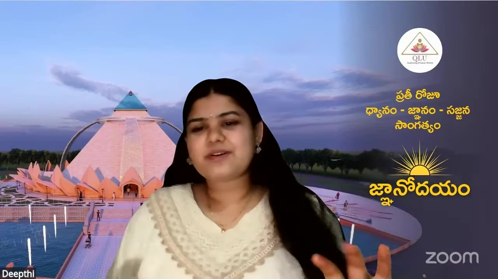

01 · ఈ నెల ఆధ్యాత్మిక జ్ఞానసారం · పూర్తి కథనం
కృతజ్ఞతాభావంతో, అహింసాయుత సంభాషణను జీవన విధానంగా మలచుకుందాం
జ్ఞానోదయం 549వ రోజులో Sathi Deepthi Reddy గారు Speak Peace శ్రేణిలో కృతజ్ఞత మరియు NVC జీవన విధానం అనే అంశాన్ని వివరించారు. ఈ ప్రసంగం వ్యక్తుల మధ్య సంభాషణను కేవలం మాటల మార్పిడిగా కాకుండా భావాలు, అవసరాలు, అవగాహనతో కూడిన సంబంధంగా చూడమని ఆహ్వానిస్తుంది. మనం వెంటనే తీర్పు చెప్పే సందర్భాల్లో వినడానికి స్థలం ఎలా కల్పించాలి, మన అవసరాలను ఇతరులపై ఒత్తిడి లేకుండా ఎలా వ్యక్తపరచాలి అనే ప్రశ్నలు ఇందులో ప్రధానంగా నిలుస్తాయి. వక్త ప్రస్తావించిన ఉదాహరణలు, వ్యక్తిగత అనుభవాలు, ఆచరణకు సంబంధించిన సూచనలను కింది విభాగాల్లో అంశాల వారీగా అందిస్తున్నాం.
ప్రసంగకర్త: Sathi Deepthi Reddy
అంశం: Speak Peace — Gratitude and Living NVC
మూల వీడియో: https://www.youtube.com/watch?v=9KxVHNI5thw
కృతజ్ఞత ఎందుకు శక్తివంతమైన సాధన
Speak Peace శ్రేణి చివరి సమావేశంలో కృతజ్ఞతను వక్త ఒక బలమైన పరివర్తన సాధనంగా అభివర్ణించారు. మనకు లేనిదానిపై మాత్రమే దృష్టి పెడితే అసంతృప్తి పెరుగుతుంది; మన జీవితాన్ని పోషించిన అనుభవాలు, వ్యక్తులు, అవకాశాలను గుర్తిస్తే సంబంధాలను మరో కోణంలో చూడగలం. ఈ మార్పును వక్త ఆధ్యాత్మిక శక్తి అనే భాషలో వివరించారు.
ప్రశంసకు బదులు స్పష్టమైన కృతజ్ఞత
ఎవరినైనా కేవలం మంచి వ్యక్తి అని పొగడటం కన్నా, వారు చేసిన నిర్దిష్ట చర్య, దాని వల్ల మన అవసరం ఎలా తీరింది, మనకు ఏ భావం కలిగింది అనే అంశాలను చెప్పడం లోతైన కృతజ్ఞతగా వక్త వివరించారు. NVCలోని గమనిక, భావం, అవసరం అనే అవగాహన ఇక్కడ కూడా ఉపయోగపడుతుంది. ఈ విధంగా చెప్పిన కృతజ్ఞత ఎదుటివారికి తమ చర్య ప్రభావాన్ని స్పష్టంగా తెలియజేస్తుంది.
వినయం అంటే తన విలువను తగ్గించుకోవడం కాదు
హంబుల్నెస్ లేదా వినయం గురించి వక్త ప్రత్యేకంగా మాట్లాడారు. తనలోని శక్తి, సామర్థ్యాన్ని నిరాకరించుకోవడం నిజమైన వినయం కాదని, ఇతరుల సహకారాన్ని గుర్తిస్తూనే తన విలువను కూడా అంగీకరించగలగడం అవసరమని ఈ చర్చ సూచిస్తుంది. మనకు వచ్చిన సహాయాన్ని గుర్తించడం కృతజ్ఞత; మనకున్న సామర్థ్యాన్ని గౌరవించడం ఆత్మగౌరవం. రెండూ పరస్పర విరుద్ధాలు కావు.
చిన్న అనుభవాల్లో కనిపించే సహకారం
ఆహారం అందించడం, రోజువారీ పనుల్లో తోడ్పడడం వంటి చిన్న సంఘటనల గురించి వక్త, పాల్గొన్నవారు పంచుకున్న సందర్భాలు ఉన్నాయి. సాధారణంగా గమనించకుండా దాటిపోయే సేవల వెనుక కూడా ఎవరో ఒకరి సమయం, శ్రద్ధ, శ్రమ ఉంటాయి. వాటిని గుర్తించినప్పుడు మనం ఒంటరిగా జీవించడం లేదనే అవగాహన పెరుగుతుంది. కృతజ్ఞతను పెద్ద సంఘటనలకు మాత్రమే పరిమితం చేయకూడదనే సందేశం ఇక్కడ వ్యక్తమవుతుంది.
తనతో తాను మాట్లాడే భాష
తప్పు జరిగినప్పుడు మనల్ని మనమే తీవ్రంగా నిందించుకునే అలవాటు గురించి చర్చ జరిగింది. జరిగిన చర్యకు బాధ్యత తీసుకోవడం అవసరమే అయినా, నిరంతర ఆత్మనింద మార్పుకు సహకరించకపోవచ్చు. తప్పును గుర్తించి, అవసరమైతే క్షమాపణ చెప్పి, తరువాత మరింత శ్రద్ధతో ఎలా స్పందించాలో నేర్చుకోవడం స్వీయ సహానుభూతికి దగ్గరైన మార్గం.
రోజు ముగింపులో కృతజ్ఞత సాధన
రోజులో జరిగిన సంఘటనలను గుర్తుచేసుకుని, మనం అందుకున్న సహాయాన్ని, మనం ఇతరులకు అందించిన తోడ్పాటును, నేర్చుకున్న పాఠాలను గుర్తించడం గురించి వక్త ప్రస్తావించారు. ఈ సాధనలో గొప్ప విజయాలకన్నా చిన్న నిజమైన అనుభవాలకే ప్రాధాన్యం ఇవ్వవచ్చు. NVC ఒక సంభాషణ పద్ధతిగా మొదలై, చివరికి మన దృష్టి, సంబంధాలు, జీవన విధానంలో భాగమవ్వాలనే సందేశంతో ఈ శ్రేణి ముగుస్తుంది.
ప్రశంస మరియు కృతజ్ఞత మధ్య తేడా
ఎవరినైనా “నువ్వు చాలా గొప్పవాడివి” అని పొగడడం, “నువ్వు చేసిన ఈ పని వల్ల నాకు ఈ సహాయం అందింది” అని కృతజ్ఞత చెప్పడం ఒకటి కాదని దీప్తి రెడ్డి గారు వివరించారు. మొదటి మాట వ్యక్తికి ఒక విలువ తీర్పును ఇస్తుంది; రెండవది జరిగిన చర్య, దాని వల్ల తీరిన అవసరం, మనలో కలిగిన భావాన్ని తెలియజేస్తుంది. NVCలో కృతజ్ఞతను స్పష్టమైన మానవ అనుభవంగా పంచుకోవాలని ఆమె చెప్పారు.
పిల్లలకు బహుమతులు, శిక్షల ఆధారంగా ప్రవర్తన నేర్పే సందర్భాన్ని కూడా వక్త ప్రస్తావించారు. తన విలువ ఇతరుల మెప్పు లేదా సాధనలపై మాత్రమే ఆధారపడుతుందని పిల్లలు భావించే ప్రమాదం ఉందని ఆమె వ్యాఖ్యానించారు. కృతజ్ఞతను బహుమతిగా ఉపయోగించకుండా, సహకారం వల్ల నిజంగా కలిగిన ఆనందాన్ని చెప్పడం సంబంధానికి మరింత దగ్గరగా ఉంటుందని ఆమె సూచించారు.
ఒక తల్లి జీవితంలో మారిన సంభాషణ
తన కుమారుడితో సంబంధం దూరమైందని బాధపడిన ఒక తల్లి NVC నేర్చుకున్న తరువాత అతనితో మళ్లీ అనుసంధానం కావచ్చనే ఆశ పొందిన ఉదాహరణను వక్త చెప్పారు. ఆ తల్లి తన అనుభవాన్ని పంచుకున్నప్పుడు, ఆమెకు ఏ బోధన ఉపయోగపడింది, దాని వల్ల తన జీవితంలో ఏ మార్పు కనిపించింది అనేది చెప్పడం ద్వారా కృతజ్ఞత వ్యక్తమైంది.
ఇక్కడ కృతజ్ఞత కేవలం “థాంక్యూ” అనే మర్యాదపూర్వక మాటగా మిగలలేదు. ఒకరి మాటలు మరొకరి జీవితంలో ఏ అవసరాన్ని తీర్చాయో తెలియజేసే సంభాషణగా మారింది. మనకు సహాయం చేసిన వ్యక్తికి ఆ ప్రభావాన్ని స్పష్టంగా చెప్పడం వల్ల ఇరువురికీ ఆ అనుభవం అర్థవంతమవుతుందని వక్త వివరించారు.
మనతో మనం మాట్లాడుకునే భాష
తప్పు చేసినప్పుడు మనల్ని మనం దూషించుకునే అలవాటును వక్త ప్రత్యేకంగా ప్రస్తావించారు. “నాకు బుద్ధి లేదా?” అని తనతో తాను మాట్లాడుకున్నప్పుడు ఆ మాట వెనుక ఉన్న బాధ, పశ్చాత్తాపం, మెరుగ్గా చేయాలనే అవసరాన్ని గుర్తించవచ్చు. తనను అవమానించడం ద్వారా బాధ్యత పెరగదు; జరిగిన చర్యను అంగీకరించి తదుపరి మార్పును నిర్ణయించడం ద్వారా నేర్చుకునే అవకాశం ఉంటుంది.
మనతో మనం కరుణతో మాట్లాడగలిగితే అదే భాష ఇతరుల పట్ల కూడా సహజంగా రావచ్చని ఆమె చెప్పారు. తనపై కఠినమైన తీర్పు వేసే వ్యక్తి ఇతరులపైనా అలాంటి తీర్పులే వేయడం సులభం. కాబట్టి స్వీయ సంభాషణను గమనించడం NVCలో చిన్న వ్యక్తిగత సాధన మాత్రమే కాదు, సంబంధాల్లో మార్పుకు పునాది.
కృతజ్ఞతను ప్రతిరోజు సాధనగా మార్చడం
ఈ శ్రేణి చివరి రోజున కృతజ్ఞతను అప్పుడప్పుడు గుర్తుచేసుకునే భావంగా కాకుండా రోజువారీ సాధనగా మార్చాలని వక్త ఆహ్వానించారు. మనకు అందిన సహాయం, మనం ఇతరులకు అందించిన సహకారం, సాధారణ జీవితంలో కనిపించే చిన్న అవకాశాలను గుర్తించవచ్చని ఆమె చెప్పారు. లక్ష్యాల జాబితాలో కృతజ్ఞతకు ప్రాధాన్యం ఇవ్వడం గురించి కూడా మాట్లాడారు.
ఈ సాధనలో ముఖ్యమైనది మాటల సంఖ్య కాదు, వాటి నిజాయితీ. ఏ పని జరిగింది, దాని వల్ల మనకు ఏ అవసరం తీరింది, మనకు ఎలా అనిపించింది అని గుర్తుచేసుకుంటే కృతజ్ఞత ఒక అలవాటుగా మారవచ్చు. ధ్యాన సాధనలో పెరిగే ఎరుకను దైనందిన సంబంధాలకు తీసుకురావడమే ఈ ముగింపు బోధనలోని ఆధ్యాత్మిక అనుసంధానం.